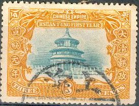
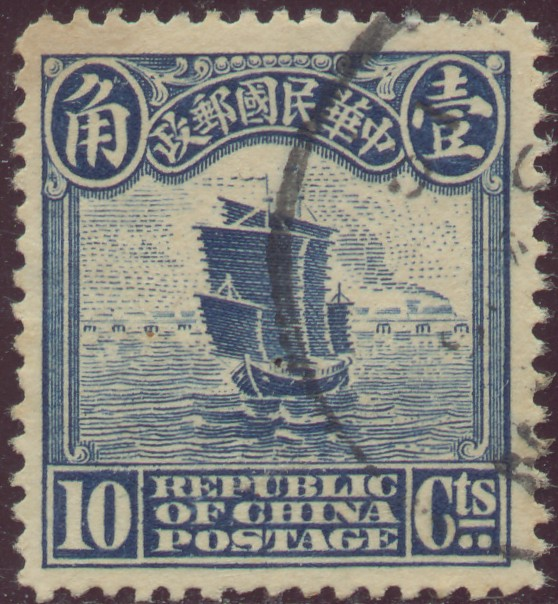
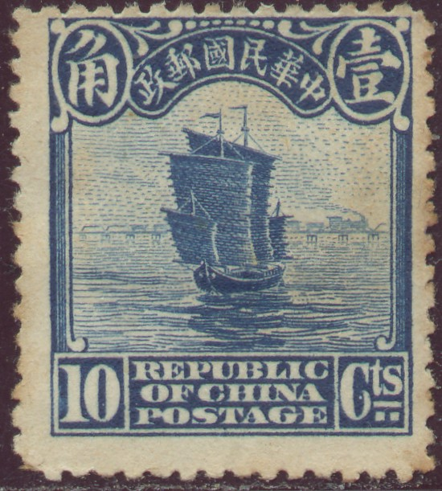
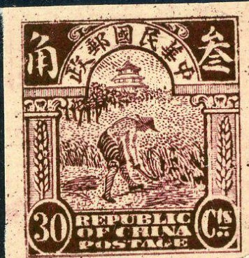
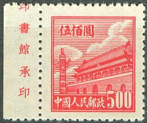

Reprint made by Waterlow?
Return To Catalogue - Older issues
Note: on my website many of the
pictures can not be seen! They are of course present in the
catalogue;
contact me if you want to purchase it.

2 c orange and green 3 c orange and blue 7 c orange and lilac
Value of the stamps |
|||
vc = very common c = common * = not so common ** = uncommon |
*** = very uncommon R = rare RR = very rare RRR = extremely rare |
||
| Value | Unused | Used | Remarks |
| 2 c | * | c | |
| 3 c | * | * | |
| 7 c | * | * | |
Reprint made by Waterlow?
Inscription 'Republic of china, Incommemoration of the republic' With the portrait of Sun Yat Sen


1 c orange 2 c green 3 c green 5 c lilac 8 c brown 10 c blue 16 c red-brown 20 c red 50 c green 1 $ red-brown 2 $ brown 5 $ grey
Value of the stamps |
|||
vc = very common c = common * = not so common ** = uncommon |
*** = very uncommon R = rare RR = very rare RRR = extremely rare |
||
| Value | Unused | Used | Remarks |
| 1 c | * | * | |
| 2 c | * | * | |
| 3 c | * | * | |
| 5 c | * | * | |
| 8 c | ** | ** | |
| 10 c | ** | ** | |
| 16 c | *** | *** | |
| 20 c | *** | *** | |
| 50 c | R | R | |
| 1 $ | R | R | |
| 2 $ | RR | RR | |
| 5 $ | RR | RR | |
With the portrait of Yuan Shi-kai

1 c orange 2 c green 3 c green 5 c lilac 8 c brown 10 c blue 16 c red-brown 20 c red 50 c green 1 $ red-brown 2 $ brown 5 $ grey
Value of the stamps |
|||
vc = very common c = common * = not so common ** = uncommon |
*** = very uncommon R = rare RR = very rare RRR = extremely rare |
||
| Value | Unused | Used | Remarks |
| 1 c | * | * | |
| 2 c | * | * | |
| 3 c | * | * | |
| 5 c | * | * | |
| 8 c | ** | ** | |
| 10 c | ** | ** | |
| 16 c | *** | *** | |
| 20 c | *** | *** | |
| 50 c | R | R | |
| 1 $ | R | R | |
| 2 $ | RR | RR | |
| 5 $ | RR | RR | |
Junk
 
For the specialist; there are two different types of these
stamps, differing in the pearls at the top center and other small
details (1913 and 1923 types).
1/2 c brown 1 c orange 1 1/2 c violet 2 c green 3 c green 4 c red 4 c grey 4 c green 5 c lilac 6 c grey 6 c red 6 c brown 7 c violet 8 c orange 10 c blue
Value of the stamps |
|||
vc = very common c = common * = not so common ** = uncommon |
*** = very uncommon R = rare RR = very rare RRR = extremely rare |
||
| Value | Unused | Used | Remarks |
| 1913 Type | |||
| 1/2 c | c | vc | |
| 1 c | c | vc | |
| 1 1/2 c | c | c | |
| 2 c | * | vc | |
| 3 c | * | vc | |
| 4 c red | * | vc | |
| 5 c | * | vc | |
| 6 c grey | * | c | |
| 7 c | * | * | |
| 8 c | * | c | |
| 10 c | * | vc | |
| Retouched 1923 Type | |||
| 1/2 c | vc | vc | |
| 1 c | vc | vc | |
| 1 1/2 c | c | c | |
| 2 c | c | vc | |
| 3 c | c | vc | |
| 4 c grey | * | c | |
| 4 c green | c | vc | |
| 5 c | c | vc | |
| 6 c red | * | c | |
| 7 c | * | c | |
| 10 c | * | vc | |
Farmer recolting rice


Two types exist, without (1913) or with five white pearls (1923)
above the pillars at each side (below the large chinese
characters at the upper corners)
13 c brown 15 c brown 15 c blue 16 c olive 20 c red 30 c lilac 50 c green
Value of the stamps |
|||
vc = very common c = common * = not so common ** = uncommon |
*** = very uncommon R = rare RR = very rare RRR = extremely rare |
||
| Value | Unused | Used | Remarks |
| 1913 Type | |||
| 13 c | ** | c | |
| 15 c brown | *** | * | |
| 16 c | ** | * | |
| 20 c | ** | c | |
| 30 c | ** | c | |
| 50 c | *** | c | |
| 1923 Retouched Type | |||
| 13 c | ** | * | |
| 15 c blue | * | * | |
| 16 c | * | * | |
| 20 c | * | vc | |
| 30 c | ** | vc | |
| 50 c | ** | c | |
Temple of Confucius
Two types exist, with double (1913) or single line (1923) below
the upper Chinese inscription in arc-shape


1 $ yellow-brown and brown 1 $ brown and black 2 $ blue and brown 2 $ blue and black 5 $ red and green 5 $ red and black 10 $ green and lilac 10 $ green and black 20 $ red and blue 20 $ yellow and black
Value of the stamps |
|||
vc = very common c = common * = not so common ** = uncommon |
*** = very uncommon R = rare RR = very rare RRR = extremely rare |
||
| Value | Unused | Used | Remarks |
| 1913 Type | |||
| 1 $ brown and black | *** | * | |
| 2 $ blue and black | *** | * | |
| 5 $ red and black | R | *** | |
| 10 $ green and black | RR | RR | |
| 20 $ yellow and black | RR | RR | |
| 1923 Retouched Type | |||
| 1 $ yellow-brown and brown | *** | c | |
| 2 $ blue and brown | *** | * | |
| 5 $ red and green | R | *** | |
| 10 $ green and lilac | RR | RR | |
| 20 $ red and blue | RR | RR | |
Surcharged
Flood relief overprints, reduced sizes
1 c and chinese text (red) on 2 c green (flood relief, 1920) '2 cts.' and chinese text(red) on 3 c green (1923) 3 c and chinese text (blue) on 4 c red (flood relief, 1920) 3 c and chinese text (red) on 4 c grey (1925) 5 c and chinese text (red) on 6 c grey (flood relief, 1920) 5 c and chinese text (red) on 15 c blue (1936) 5 c and chinese text (red) on 16 c olive (1936)
Value of the stamps |
|||
vc = very common c = common * = not so common ** = uncommon |
*** = very uncommon R = rare RR = very rare RRR = extremely rare |
||
| Value | Unused | Used | Remarks |
| 1 c on 2 c | * | * | |
| 2 c on 3 c | * | * | With inverted surcharge: RRR |
| 3 c on 4 c red | ** | * | |
| 3 c on 4 c grey | c | c | |
| 5 c on 6 c | ** | ** | |


Manchuria (left) and Yunnan (right) overprints
Some of these stamps were overprinted with Chinese characters to be used in Manchuria (1927), Eastern Turkestan (1915) and Yunnan (1927).

Postcard in a similar design in the value 2 c green
The following stamps are postal forgeries of the 10 c:


In these postal forgeries, the '0' is smaller and the chinese characters are badly drawn. It is described in the book 'Postal Forgeries of the World' by H.G.L. Fletcher.

I've been told that this is another postal forgery of the 30 c
value, I have no further information.
1 c orange 3 c green 6 c grey 10 c blue
1 c orange 3 c green 4 c red 10 c blue
1 c orange 4 c olive 10 c blue 1 $ red
1 c orange 4 c olive 10 c blue 1 $ red
Issue of 1929
1 c orange 4 c olive 10 c blue 1 $ red
Issue of 1932
Issue of 1933
Stamp of 1935 with image of boat in harbour
Later issue with image of Sun Yat Sen

Stamps - Timbres-Poste - Briefmarken - Postzegels
{kind=link}
{kind=link}
{kind=link}